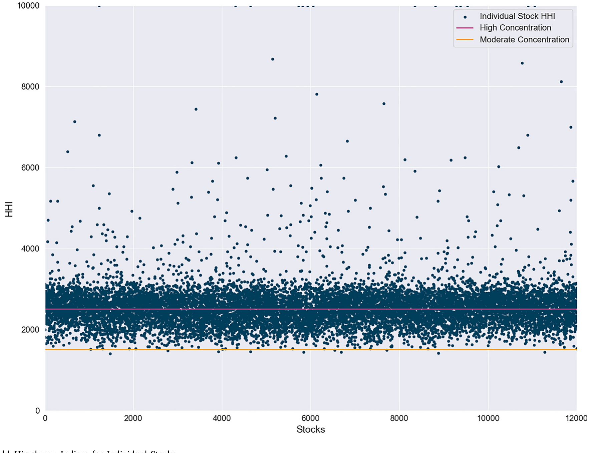
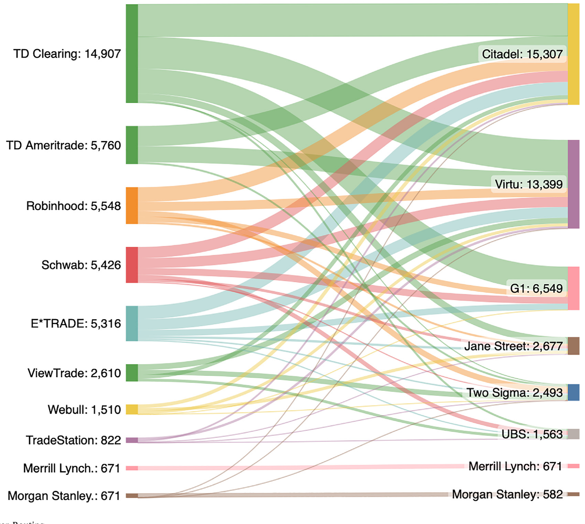
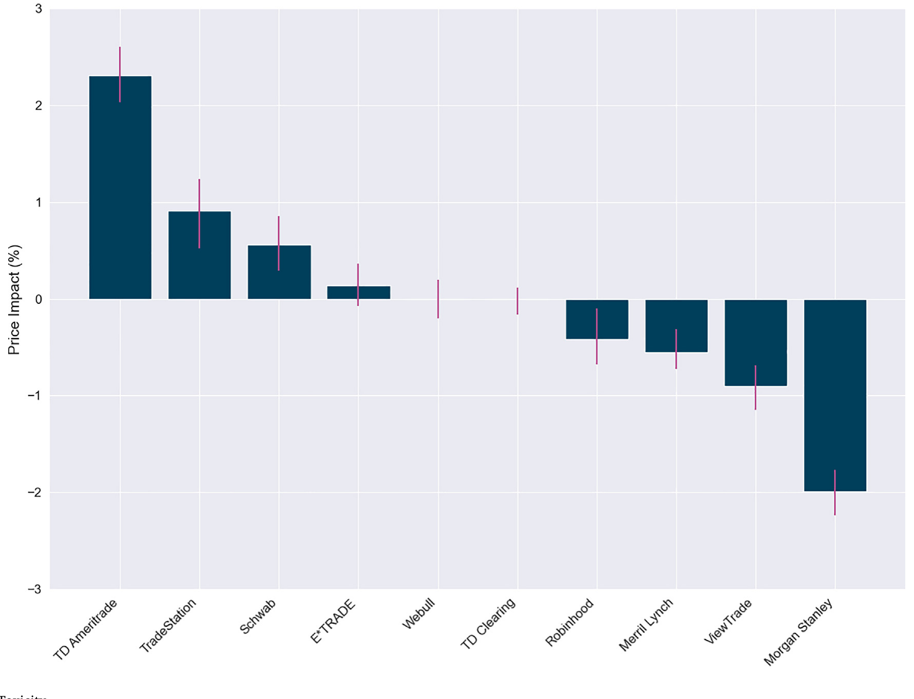
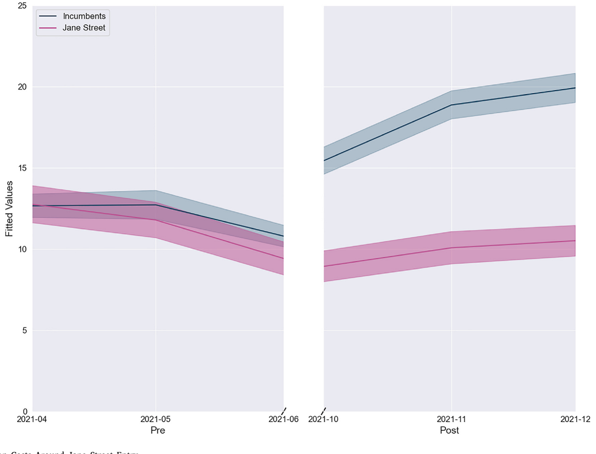
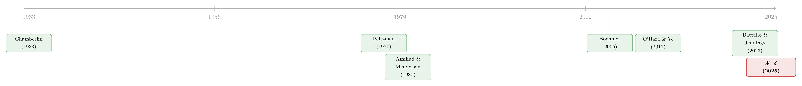

集中，到底是谁的福利？——一张散户订单的旅行账单
本文读的是 Dyhrberg, Shkilko & Werner (2025, Journal of Financial Economics)：用四年、覆盖一万两千只美股的 SEC Rule 605/606 公开数据，作者们第一次系统地把美国散户订单流的「批发」生意拆开来看。结论很反直觉——这个被监管者担心「太集中」的市场，恰恰因为集中，才让散户拿到了更低的成交成本：最大的两家批发商 Citadel 与 Virtu 报价最便宜，源头是规模经济；而当一个新的大玩家（Jane Street）杀进来时，执行成本不降反升。
1 一个让监管者头疼的悖论
先讲一个几乎是常识的故事。
经济学家（Autor et al., 2017；Grullon et al., 2019）、记者（Economist, 2016）、政策制定者（CEA, 2016）这些年都在反复敲打同一件事：各行各业越来越「集中」，少数巨头吃下越来越大的份额，消费者因此要为商品和服务多掏钱。这套逻辑当然有道理——前提是大公司拥有定价权（pricing power）。可如果集中不是靠垄断、而是靠效率竞争出来的呢？那么按照 Demsetz (1973)、Peltzman (1977) 的老传统，更能服务客户的公司份额更大，反而会带来长期效率与更友好的价格。
这就是本文的张力所在。散户订单流的「批发」市场正是一个集中度高得吓人的行业：两家最大的批发商（wholesaler），Citadel Securities 和 Virtu Financial，合计吃下了将近 70% 的散户订单流。监管者——包括美国证监会（SEC）的高层——据此忧心忡忡：这么集中，散户还能有好果子吃吗？SEC 甚至提出要搞逐单拍卖（order-by-order auction），让流动性提供者为每一笔散户订单单独竞价，谁给的价格改善最多谁才有权成交（SEC, 2022）。
作者们要回答的，就是这个被吵翻了天的问题：当下这套「经纪商 → 批发商」的散户订单处理机制，到底是在保护散户，还是在揩散户的油？

Figure 1: Herfindahl–Hirschman Indices for Individual Stocks
2 一张散户订单的旅行路线
要理解这场争论，得先看清一笔散户订单是怎么「旅行」的。
在 1990 年代，很多美国零售经纪商（broker）是自己做市、在内部撮合客户订单的。但 2000 年代初的市场演化和监管改革催生了激烈的流动性竞争，逼着经纪商退出了自营做市，转而把订单外包给一类垂直整合的场外做市机构——也就是批发商。今天，绝大多数经纪商把客户订单发给批发商，后者用自己的库存「内部化」（internalize）掉大部分主动成交的订单：散户要卖，它就买下来；散户要买，它就卖出去，赚的是买卖价差（bid–ask spread）。
这道价差怎么分？批发商留一部分，一部分以价格改善（price improvement）的形式让利给散户（即成交价比交易所挂牌价更好），还有一部分在某些情况下作为订单流支付（payment for order flow, PFOF）返还给经纪商。
整个争论的火力，集中在「价格改善到底有多少」上。批评者（包括 SEC 的一些官员）认为，批发商给的价格改善是 de minimis 的——少到不能再少。而本文的数据给出的第一个硬结论是：远非如此。
全样本里，批发商提供的价格改善达到挂牌价差的 27%；在一只平均的标普 500 成分股里，散户拿到的价格改善更是高达挂牌价差的 51%。与此同时，作者们根据 Rule 606 披露估算出，批发商付给经纪商的 PFOF，平均只占挂牌价差的 1%。
换句话说，散户拿到的让利是真金白银的几成价差，而 PFOF 不过是个零头。更关键的是，接受 PFOF 的经纪商对所有批发商收取同一个 PFOF 费率——也就是说，经纪商怎么在各家批发商之间分配订单，并不会改变它的 PFOF 收入。这一步看似不起眼，却堵死了「经纪商为了多收 PFOF 而把订单卖给出价差的批发商」这条质疑路径。而且像 Fidelity、Vanguard 这样根本不收 PFOF 的大经纪商，照样把订单大量发给批发商——单纯为了履行最优执行（best execution）义务。

Figure 2: Retail Broker Routing
3 真正关键的一步：用什么尺子量「执行质量」
接着，一个自然的问题是：既然要比较八家批发商谁好谁坏，该拿什么当尺子？
直觉上，价格改善（相对挂牌价差）似乎够用了。但本文指出，这把尺子对比较批发商而言是有偏的。原因藏在一个词里——毒性（toxicity）。
所谓毒性，指的是「需求流动性的散户订单」与「批发商供给流动性后所面对的不利价格移动」之间的关联。说白了：如果一家批发商接到的订单，往往在成交后价格立刻朝不利方向走（散户买完就涨、卖完就跌），那这批订单就是「毒」的——批发商赚到的价差会被随后的价格移动吃掉。
而本文的数据恰恰揭示，不同经纪商的订单流毒性差异巨大。老牌经纪商如 E*TRADE、Schwab、TD Ameritrade 产生的订单流更「毒」；而 Robinhood、Webull 这些新经纪商的订单流毒性更低。由于 Rule 606 报告显示每家批发商接到的「经纪商组合」不同，毒性也就在批发商之间产生了显著差异——Rule 605 数据显示，最大的两家批发商 Citadel 与 Virtu，恰恰接到了最毒的订单流。

Figure 3: Broker Toxicity
这就引出了本文测量逻辑的核心。一笔成交里，散户实际付出的有效价差（effective spread），会被分解成两块：批发商真正落袋的部分，和成交后被价格移动「吃掉」的部分。前者就是经过毒性调整后的已实现价差（realized spread），后者正是价格冲击（price impact）——也就是毒性本身。这是微观结构里的标准分解：
逻辑于是变得清楚：当一个经纪商比较各家批发商时，它自己客户的订单流毒性是「天然held constant」的——同一批客户的毒性，发给谁都一样。所以对经纪商来说，用不调整毒性的价格改善去比较批发商，是合适的。但对研究者来说，我们拿到的是按批发商汇总的数据，混入了不同经纪商的毒性，这时就必须用已实现价差（realized spread）这把「毒性调整后」的尺子，才能公平地横向比较批发商。值得一提的是，这个 realized spread 也正是 SEC 在「订单竞争规则」经济分析里所采用的核心指标。
4 核心：为什么「越大越便宜」？
然后，真正反转的地方来了。
如果用 realized spread 这把对的尺子去量，会发现——最大的两家批发商，Citadel 和 Virtu，收的费用反而比小竞争对手更低。更狠的是，作者们发现，运营规模（operation size）几乎完整地解释了头部两家与其余批发商之间的成本差异。这意味着，规模经济在批发商层面实实在在地压低了成本，而这些节省又被传导给了散户。
为什么是规模经济？本文从产业组织（industrial organization）和库存管理（inventory management）两条线给出了机制。
第一条是市场结构。批发市场呈现出典型的垄断竞争（monopolistic competition; Chamberlin, 1933; Dixit and Stiglitz, 1977; Asplund and Nocke, 2006）特征：两家领头羊 + 一圈竞争性的「边缘厂商（competitive fringe）」；存在显著的固定成本（暗示规模经济）；批发商提供的是差异化服务（除了执行成本，还有规模改善、可靠性、资本承诺等本文无法测量的维度）。在这种结构下，每家批发商面对一条向下倾斜的需求曲线，定价以利润最大化；而进入与退出的威胁，最终会把批发服务的价格推向平均成本。
第二条，也是更精巧的一条，是库存管理。和 Amihud and Mendelson (1980)、Ho and Stoll (1981) 那种「靠调整报价管理库存」的经典做市商不同，批发商对全国最优买卖报价（National Best Bid and Offer, NBBO）几乎没有影响力——它们和经纪商的安排要求自己照单全收所有可成交订单。于是批发商只能通过在别的场所交易来对冲库存失衡，这往往要放弃预期的价差收入、还要付场所费用。Huang et al. (2012)（单一证券）与 Song (2010)（多证券）把这个问题刻画成「带成本控制的库存管理问题」，并证明最优库存政策是一个门槛政策（threshold policy）：上下两个门槛决定何时把库存「甩」出去。
关键在于：如果批发商的风险厌恶越低、或证券波动率越低，它就会把门槛设得更宽，从而在控制库存上花更少的资源。而风险厌恶随财富下降（Arrow, 1971；Paravisini et al., 2017）——这正好解释了为什么规模有用：体量越大、资本越雄厚，风险厌恶越低，库存管理越省。同时，批发商在数千只证券上提供服务，为一个分散化的组合管理库存，远比逐只证券地管要便宜——这一点，和多资产做市里「一只股票的冲击会改写另一只报价」的逻辑一脉相承（关于这一点，可参见《做市商的「一本账」：当一只股票的冲击，悄悄改写了另一只的报价》；而做市商被风险厌恶「系上绳」的机制，亦可参见《无风险市场里的风险厌恶》）。
那么，问题又来了：头部批发商既然有这么多规模红利，为什么愿意「让」给散户，而不是自己留下当利润？
答案在经纪商这一侧——它也很集中。比如 TD Ameritrade，即便在被 Charles Schwab 收购之前，就占了作者们能从 Rule 606 估算出的散户订单流的 47% 以上。换句话说，经纪商坐在驾驶座上。它们持续监控执行质量，把订单流重新分配给表现更好的批发商：谁的执行成本低，谁就拿到更多的量。数据与「经纪商精心监控成本、用更多订单流奖励优秀批发商」高度一致。
5 一个被低估的细节：「打包」如何救活了小盘股
这里还藏着一个特别有意思的制度细节——打包（bundling）。
一个典型的经纪商，并不是逐只证券地评价批发商的。也就是说，哪怕 Citadel 在苹果（Apple）这只票上执行成本最低，它也未必能因此拿到更多苹果的订单流。相反，Citadel 必须在整个证券谱系上、包括那些交易稀疏的小票上都跑赢对手，才能整体上赢得更多订单流。
这个机制的后果很微妙：经纪商实际上是在逼着批发商在微盘和小盘股里竞争。这些低成交、高库存成本的票，本来是中介最不愿碰的；监管者和交易所也常常发愁怎么改善它们的流动性。而本文发现，一旦把库存成本纳入考量，批发商在微盘和小盘股上收的执行成本，相对大盘股竟然是偏低的——正是「经纪商强制打包」在为小票托起了流动性。
这也直接关系到 SEC 那个逐单拍卖的提案。本文给出了两点冷静的提醒：第一，提案假设「非专业流动性提供者」会踊跃地为散户订单报出比批发商更优的价格改善——这在大盘股或许成立（散户对非散户的比例是 1:13），但在数千只散户实际在交易的微盘小盘股里，交易稀疏，这个比例只有 1:2，假设很可能落空。第二，逐单拍卖会消灭打包，从而削弱中介在微盘小盘股上服务散户的激励。作者们因此警告：真要实施，许多散户的执行质量可能不升反降——这与 Ernst et al. (2024) 基于理论模型得出的结论一致。
6 反转：当一个新巨头进场
最后，故事迎来了真正的反转。
在样本期内，一个新玩家——Jane Street Capital——杀进了批发市场，并在短短几个月里抢下了超过 12% 的散户订单流。按照「竞争越多越好」的朴素直觉，多了一个有力的竞争者，批发商之间的火拼应该更激烈，散户的执行成本应该下降才对。
可作者们的双重差分（difference-in-differences, DiD）分析，没有证实这个预期。事实恰恰相反：执行成本上升了。
这并不矛盾——它正是规模经济逻辑的镜像。新进入者抢走了一部分订单流，意味着在位者（incumbents）的运营规模缩水，规模经济被削弱，单位成本上升，最终反映为更高的执行成本。集中带来的红利，会随着集中度被打散而流失。

Figure 5: Execution Costs Around Jane Street Entry
这也回答了一个自然的疑问：既然越大越便宜，市场为什么没有自然演化到「只剩一家批发商」的极端？本文的回答是：那对经纪商而言是次优的——一个垄断的批发商太难驾驭，何况只有一家还意味着巨大的操作风险。所以当下这种「几家竞争 + 一圈竞争性边缘」的格局，更像是一种精妙的平衡：允许少数玩家做大、享受规模经济，同时保留一个可信的竞争威胁，吓阻任何一家乱来。
7 数据
本文的数据本身就是一项贡献——它完全来自公开的 SEC Rule 605 与 Rule 606 报告。
- Rule 605：每个市场中心（含批发商）须按月、按个股披露其执行质量。本文收集了
2019年 1 月至2022年 12 月共四年的数据。 - Rule 606：每个经纪商须按月披露它向各市场中心的路由比例与收付的款项（含 PFOF）。
- 样本：与 CRSP 月度数据匹配后，得到
12,012只 NMS 证券（含 ETP）；覆盖全部8家主要批发商。子样本划分为标普 500，以及非标普 500 按市值分的三个三分位（tercile 1 ≥$600M；tercile 2 在$110M–$600M；tercile 3 <$110M）。 - 可信度：SEC 在「订单竞争规则」的经济分析里指出，Rule 605 报告与监管层可访问的 Consolidated Audit Trail (CAT) 数据高度一致；许多机构还用第三方分析商生成报告，FINRA 也定期审计——这降低了自报偏差的担忧。
- 局限：数据是月频的，且不含零股（odd lots）和卖空。Battalio and Jennings (2023) 显示这两者约占散户成交量的
7.34%，且会放大价格改善的价值——这意味着本文可能低估了批发商提供的服务价值。
8 文献脉络
这条研究线，可以看作三股力量的汇流。
一股来自产业组织：从 Demsetz (1973)、Peltzman (1977) 关于「集中未必有害、效率也能造就集中」的老争论，到 Chamberlin (1933)、Dixit and Stiglitz (1977)、Asplund and Nocke (2006) 的垄断竞争理论——本文借它们来给批发市场的结构定性。
一股来自做市与库存管理：Amihud and Mendelson (1980)、Ho and Stoll (1981) 的经典库存模型，到 Huang et al. (2012)、Song (2010) 把它推广到「批发商无法影响 NBBO、只能照单全收」的现实情形，给出门槛型最优库存政策——这是规模经济机制的理论地基。
第三股来自执行质量的实证：2001 年 SEC 强制披露执行质量后，Bessembinder (2003)、Boehmer (2005)、Boehmer et al. (2007) 等一批研究用早期的 Dash 5 / Rule 605 数据起步；O'Hara and Ye (2011) 用 Rule 605 数据研究市场分割。而在当下这套「批发商 + PFOF」的新结构下，几乎同期出现了三篇用专有或自生数据的工作论文——Battalio and Jennings (2023)（某一家匿名批发商的订单级数据）、Ernst et al. (2023)（三家经纪商的专有路由数据）、Huang et al. (2024)（自生零股订单的实地实验）。本文的位置很清楚：它用公开、全覆盖的四年数据，第一次同时看清了全部八家批发商、近 100% 的散户订单流，以及经纪商的路由动态与订单流毒性——这是任何单一专有数据都做不到的全景。

（顺带一提，本文与本博客此前几篇关于散户与执行的文章遥相呼应：散户为什么会聚在某些票上，见《散户的栖息地》；不同投资者的「成交场所准入」如何决定成本，见《谁能进这间「暗房」，决定了你的成交成本》；以及散户需求如何外溢到衍生品定价，见《当波动率曲面被「散户」推歪》。）
9 评论与延伸（Q&A + 研究方向）
(a) 几个可能的疑问
Q：价格改善（price improvement）和已实现价差（realized spread），到底用哪个？作者是不是在两套尺子之间「挑」对自己有利的？
不是「挑」，而是「看谁用」。对经纪商比较批发商而言，价格改善是合适的——同一批客户的订单流毒性在各批发商之间天然相同，被自动抵消了。但对研究者用按批发商汇总的数据做横向比较而言，必须用毒性调整后的 realized spread，否则会把「Citadel 接到最毒的流」误读成「Citadel 更贵」。两把尺子各有其正确的使用场景，这恰是本文测量上的关键洞见。
Q：批发商「自报」的 Rule 605/606 数据，可信吗？
有三道防线。其一，SEC 自己在「订单竞争规则」分析里说，Rule 605 与监管层掌握的 CAT 数据高度一致；其二，原始 Rule 605 里还混着 4000 多只根本不需要报告的非 NMS 证券（如权证、可转债），说明机构是把全部原始数据「整批」交给第三方分析商，而非挑挑拣拣再上报；其三，FINRA 定期审计，样本内无机构因报告不一致被处罚。
Q：「集中反而便宜」会不会只是因为大批发商接到的订单恰好更好做？
这正是毒性调整要解决的问题。事实上方向是反的——最大的两家接到的是最毒的订单流。在用 realized spread 调整掉毒性后，它们依然更便宜，且运营规模几乎完整解释了成本差。这让「订单更好做」的替代解释很难成立。
Q：Jane Street 进来后成本上升，会不会是巧合，而非「规模经济被稀释」？
作者用 DiD 来识别这一冲击，且结果与机制方向一致：在位者订单流缩水 → 规模经济削弱 → 单位成本上升 → 执行成本上升。当然，DiD 的可信度取决于平行趋势与「Jane Street 进入是否外生于执行成本的其他驱动」，这是需要谨慎对待的地方（见下文我的判断）。
Q：既然越大越便宜，为什么不干脆只留一家批发商？
因为那对经纪商不是好事。一个垄断批发商太难驾驭，且单点依赖意味着巨大的操作风险。当前「几家竞争 + 竞争性边缘 + 进入威胁」的格局，反而是让某些玩家做大享受规模经济、同时保留可信威胁的平衡解。
Q：那 SEC 的逐单拍卖提案，是好是坏？
本文的立场偏谨慎。拍卖假设非专业流动性提供者会踊跃竞价，这在大盘股（散户/非散户 = 1:13）也许成立，但在数千只微盘小盘股（仅 1:2）很可能落空；而且拍卖会消灭「打包」，削弱中介服务小票的激励。结论是：很多散户的执行质量可能因此变差，而非变好。
(b) 几个可能的研究问题与提案
1. 把「批发商规模经济」搬到公司债市场。 【经济故事】公司债是经销商（dealer）主导的场外市场，库存成本与规模经济的逻辑天然契合——大经销商是否也因规模而给客户更低的成交成本？【可行性】中。TRACE 提供成交级数据，可构造经销商层面的已实现价差与库存指标；难点在于公司债没有 NBBO、且大宗交易的「接盘人」结构复杂（可参见《谁来接住这一大笔债券？》），识别规模经济需要在控制券种、评级、久期后做横截面比较。
2. 订单流毒性的「经纪商指纹」能否预测散户收益？ 【经济故事】本文发现 Robinhood/Webull 的订单流毒性低于老牌经纪商。若毒性可按经纪商稳定区分，它本质上是在度量不同散户群体的「信息含量」——这与「散户是不是聪明钱」的争论直接相关。【可行性】高。Rule 605/606 是公开的，可构造各经纪商的毒性时间序列，再与该群体可观测的交易表现或市场事件对照。
3. 外资持有人结构如何影响中介的库存成本与执行质量？ 【经济故事】本文把规模经济追溯到「分散化库存 + 低风险厌恶」。如果一类资产的边际持有人是外资（其交易时区、流动性需求、信息不同），中介对冲库存的成本会随之改变，进而影响执行质量。【可行性】中。需要把持有人结构数据（如 13F、国际持仓）与成交成本对接，识别上要处理「持有人结构内生于资产流动性」的反向因果。
4. 用 Jane Street 进入做一次干净的「规模经济稀释」自然实验。 【经济故事】本文已用 DiD 给出方向性证据。下一步是把「在位者份额损失的异质性」当作连续处理强度，检验份额损失越多的批发商、其执行成本上升越多——这能把「规模经济」从「同期其他冲击」中进一步剥离。【可行性】中高。数据现成（Rule 605），关键是构造份额冲击的工具或用进入前的份额做处理强度，并做安慰剂检验。
5. 「打包」对小盘股流动性的因果效应。 【经济故事】本文论证经纪商的打包逼着批发商在小票上竞争、托起了小票流动性。若逐单拍卖真的落地，可作为消灭打包的外生冲击，事前事后地度量微盘小盘股流动性的变化。【可行性】低到中。取决于提案是否实施及实施范围；在它落地前，只能用横截面或结构模型间接推断。
10 我的判断
这篇论文最大的贡献，是用公开数据把一个被政策辩论裹挟、却长期看不真切的市场，第一次完整地摊在了桌面上。它的说服力不在某一个花哨的识别，而在「全覆盖 + 四年 + 八家批发商 + 全部散户流」这个数据视角本身——这是 Battalio and Jennings (2023)、Ernst et al. (2023)、Huang et al. (2024) 那些专有/小样本工作论文都给不了的全景。而「集中源于规模经济、且红利被传导给散户」这个反直觉的结论，加上「打包托起小盘股流动性」这个被忽视的制度细节，对当下 SEC 的逐单拍卖之争是极有分量的实证输入。
但我有两点保留。其一是识别。本文最接近因果的部分是 Jane Street 进入的 DiD，其余多为横截面相关——「规模 → 低成本」的因果方向，仍可能被「某些批发商先天更高效，于是既大又便宜」这类不可观测的能力差异所污染；运营规模「完整解释」成本差，更像是规模与效率难以分离的体现，而非纯粹的规模因果。Jane Street 这一冲击是否外生于执行成本的其他同期驱动（如 2019–2022 这段极不平静的市场环境），也值得更细的平行趋势与安慰剂检验。其二是数据口径：月频、且不含零股与卖空，作者诚实地承认这可能低估了批发商的服务价值——反过来说，我也想看到在更高频、纳入零股后，结论的量级是否稳健。
我接下来最想看到的，是把这套「规模经济 + 库存分散化 + 打包」的框架，搬到 NBBO 不存在、经销商主导、库存成本更显性的公司债与信用市场去检验——那里既是规模经济逻辑的天然试验场，也是散户保护与中介集中之争的下一个战场。
参考文献
- Amihud, Y., Mendelson, H. (1980). Dealership market: Market-making with inventory. Journal of Financial Economics 8(1), 31–53.
- Asplund, M., Nocke, V. (2006). Firm turnover in imperfectly competitive markets. Review of Economic Studies 73, 295–327.
- Autor, D., Dorn, D., Katz, L.F., Patterson, C., Van Reenen, J. (2020). The fall of the labor share and the rise of superstar firms. Quarterly Journal of Economics 135, 645–709.
- Battalio, R.H., Jennings, R.H. (2023). Wholesaler execution quality. Working paper, University of Notre Dame.
- Bessembinder, H. (2003). Selection biases and cross-market trading cost comparisons. Working paper, University of Utah.
- Boehmer, E. (2005). Dimensions of execution quality: Recent evidence for US equity markets. Journal of Financial Economics 78(3), 553–582.
- Boehmer, E., Jennings, R., Wei, L. (2007). Public disclosure and private decisions: Equity market execution quality and order routing. Review of Financial Studies 20(2), 315–358.
- Chamberlin, E.H. (1933). The Theory of Monopolistic Competition. Harvard University Press.
- Demsetz, H. (1973). Industry structure, market rivalry, and public policy. Journal of Law and Economics.
- Dixit, A.K., Stiglitz, J.E. (1977). Monopolistic competition and optimum product diversity. American Economic Review.
- Ho, T., Stoll, H.R. (1981). Optimal dealer pricing under transactions and return uncertainty. Journal of Financial Economics.
- O'Hara, M., Ye, M. (2011). Is market fragmentation harming market quality? Journal of Financial Economics 100(3), 459–474.
- Paravisini, D., Rappoport, V., Ravina, E. (2017). Risk aversion and wealth: Evidence from person-to-person lending portfolios. Management Science 63(2), 279–297.
- Peltzman, S. (1977). The gains and losses from industrial concentration. Journal of Law and Economics 20, 229–263.
- Song, M. (2010). Applications of Stochastic Inventory Control in Market-Making and Robust Supply Chains. Dissertation, MIT.